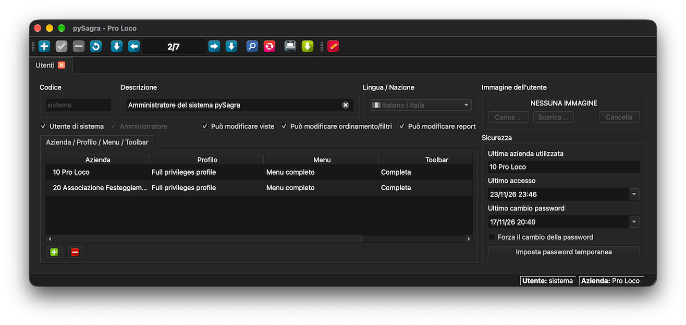

Utenti
Questo archivio contiene l'elenco delle persone che possono utilizzare il programma. Ognuno entra con il suo codice e la sua password.

Nell'anagrafica degli utenti troviamo queste impostazioni:
- Codice: codice alfanumerico dell'utente, una volta inserito non si può cambiare.
- Descrizione: descrizione dell'utente, è obbligatoria come il codice.
- Lingua / Nazione: la localizzazione dell'utente, determina la lingua del programma e il formato di numeri e date.
- Utente di sistema: se spuntata l'utente non si può modificare nè cancellare.
- Amministratore: se spuntata l'utente può accedere a tutte le funzioni del programma.
- Può modificare viste: consente di personalizzare le griglie.
- Può modificare ordinamento/filtri: consente di personalizzare filtri e ordinamenti negli archivi.
- Può modificare report: consente di personalizzare le finestre di stampa dei report.
- Azienda / Profilo / Menu / Toolbar: permette di impostare per utente le aziende in cui può lavorare e, per ciascuna,
il profilo, il menu e la toolbar da utilizzare.
- Immagine dell'utente: è possibile memorizzare un'immagine dell'utente ma non ha utilizzi reali.
Nel riquadro Sicurezza vengono visualizzate:
- Ultima azienda utilizzata
- Ultimo accesso
- Ultimo cambio password
e si possono effettuare queste operazioni:
- Forza il cambio della password: se spuntata costringe l'utente a scegliere una nuova password al prossimo accesso.
- Imposta password temporanea: assegna una password temporanea, per esempio a un utente nuovo o a chi l'ha dimenticata, e imposta il Forza il cambio della password.
Inizio pagina